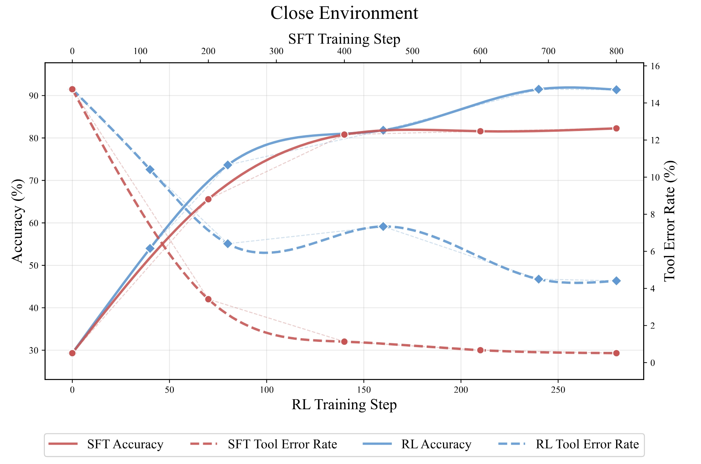
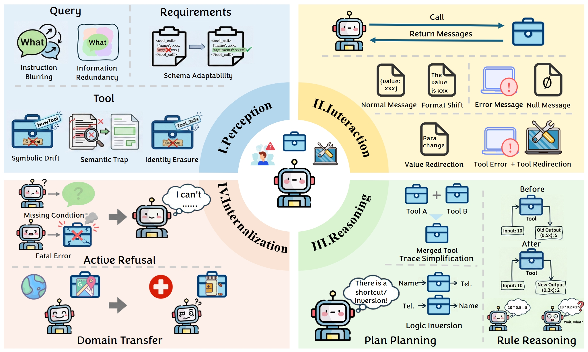
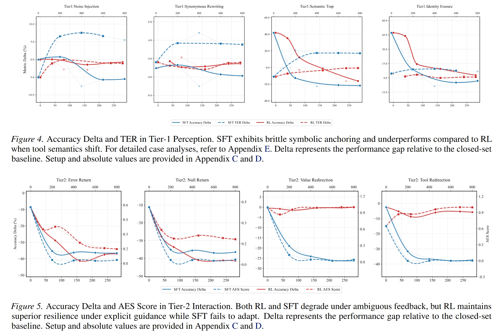
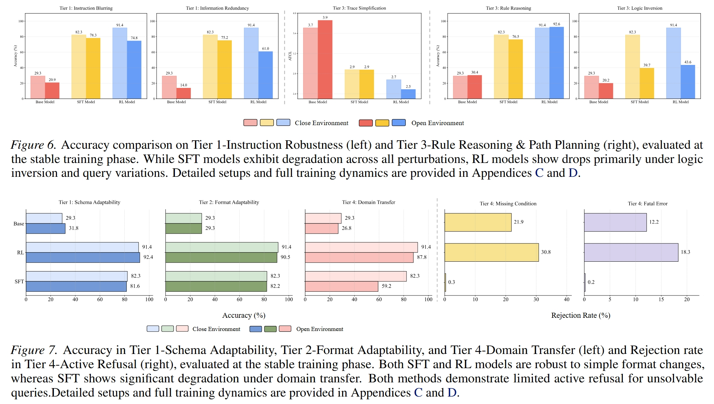

While Large Language Model (LLM) agents demonstrate proficiency in static benchmarks, their deployment in real-world scenarios is hindered by the dynamic nature of user queries, tool sets, and interaction dynamics. To address this generalization gap, we formalize OpenAgent (Tool-Use Agent in Open-World), a problem setting characterized by distributional shifts across query, action, observation, and domain dimensions.
We construct a controlled sandbox environment where we define fine-grained environmental shifts across a four-tier hierarchy, Perception, Interaction, Reasoning, and Internalization, and conduct a comprehensive series of experiments. Our exhaustive analysis yields a series of key insights, demonstrating that agents trained via both Supervised Fine-Tuning and Reinforcement Learning suffer from varying degrees of performance degradation when confronting open environmental shifts.
Building on these insights, we propose Perturbation-Augmented Fine-Tuning (PAFT), a disturbance-based intervention strategy for SFT that lays the foundation for enhancing agent robustness and utility in realistic environments.
Under the prevailing static world assumption, where the distribution of tools, schemas, and interaction logic remains consistent between training and inference, both Supervised Fine-Tuning (SFT) and Reinforcement Learning (RL) paradigms demonstrate stable and continuous performance gains, eventually converging on near-perfect success rates. However, this stability is often an artifact of the closed-set nature of current benchmarks.

Real-world deployment is fundamentally non-stationary. To rigorously address the generalization gap, we formally define OpenAgent (Tool-Use Agent in Open-World), characterizing non-stationary shifts across User Queries, Tool Sets, and Interaction Dynamics.
We establish a controlled sandbox environment to conduct "controlled probing." This setup allows us to systematically inject open-world perturbations across a comprehensive four-tier diagnostic framework: Perception, Interaction, Reasoning, and Internalization.

Our exhaustive evaluations across the four tiers reveal varying degrees of generalization and adaptability in SFT and RL models under open-world settings, identifying critical failure modes in current paradigms:


@inproceedings{wu2026openagent,
title = {Can Agents Generalize to the Open World? Unveiling the Fragility of Static Training in Tool Use},
author = {Wu, Weiming and Lv, Song-Lin and Zhu, Rui and Cheng, Zi-Jian and Guo, Lan-Zhe},
booktitle = {Proceedings of the 43rd International Conference on Machine Learning},
year = {2026}
}